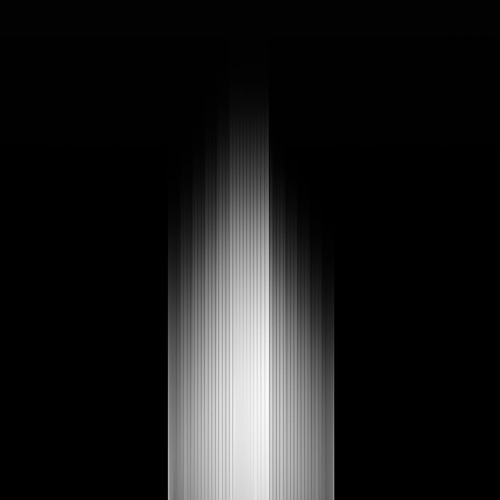
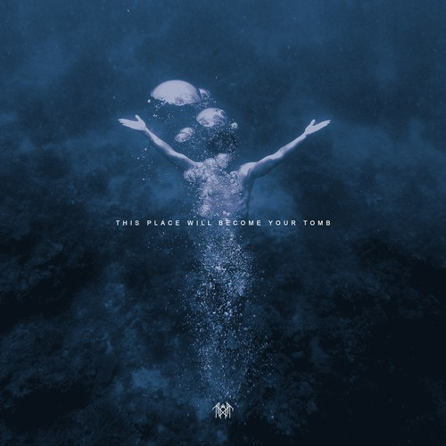
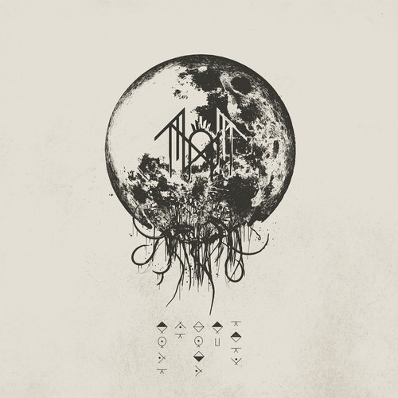
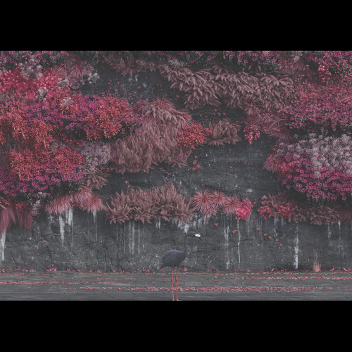

The Foundation: Sleep Token's Music
Explore the core of Sleep Token's sonic landscape through their foundational albums and latest offerings, each a layer in the ever-evolving tapestry of their art.
Sundowning (2019)

By blending airy melodies with strong undertones, Sleep Token's first album, Sundowning, defined their distinctive approach. Among the topics of the album are yearning, dedication, and the cyclical beat of day and night.
Tracklist:
- The Night Does Blong To God
- The Offering
- Levitate
- Dark Signs
- Higher
- Take Aim
- Give
- Gods
- Sugar
- Say That You Will
- Drag Me Under (Bonus Track)
- Blood Sport
This Place Will Become Your Tomb (2021)

Their second album delves at loss, memory, and the places we occupy, both physically and emotionally. The soundscape becomes more complicated and dynamically varied.
Tracklist:
- Atlantic
- Hypnosis
- Mine
- Like That
- The Love You Want
- Fall For Me
- Alkaline
- Distraction
- Descending
- Telomeres
- High Water
- Missing Limbs
Take Me Back to Eden (2023)

Completing a trilogy of albums, Sleep Token's third full-length record expands on their exploration of complex emotions and musical environments. Common themes include desire, worship, and the quest for paradise.
Tracklist:
- Chokehold
- The Summoning
- Granite
- Aqua Regia
- Vore
- Ascensionism
- Are You Really Okay?
- The Apparition
- DYWTYLM
- Rain
- Take Me Back To Eden
- Euclid
Even in Arcadia (2025, Releases May 9th!)

"Even in Arcadia," Sleep Token's soon to be newest album, highlights the band's evolving style and thematic depth. Only three songs have been pre-released thus far.
Tracklist:
- Look to Windward
- Emergence (Released)
- Past Self
- Dangerous
- Caramel (Released)
- Even in Arcadia
- Provider
- Damocles (Released)
- Gethsemane
- Infinite Baths